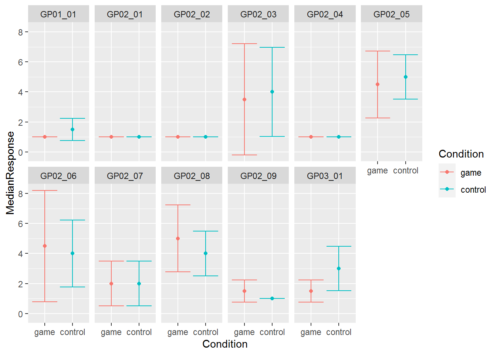
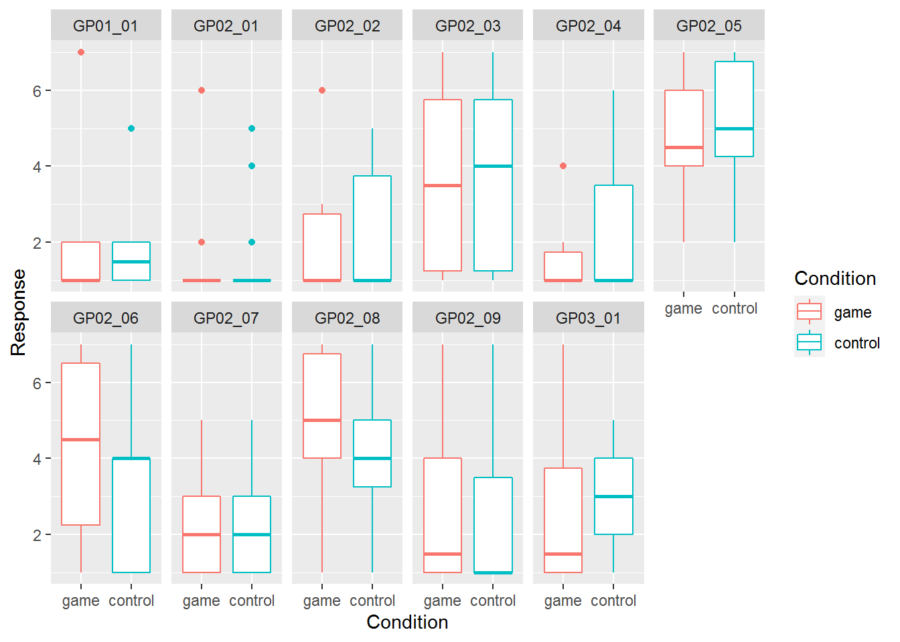

Seminar 8 Tidyng your data: joins and pivots
It is fun to work with tidy complete data. Unfortunately, more often than not you will need to preprocess and tidy it up before you can analyze it. In addition to dplyr, Tidyverse has tidyr package that helps you with some of the problems. Grab the exercise notebook and let’s get started.
8.1 Joining tables
Sometimes, results of a study are stored in separate tables. For example, demographic information can be stored separately from responses, as the former is the same for all trials and conditions, so it makes little sense to duplicate it. For the actual analysis, you may eed to add this information, merging or, in SQL/Tidyverse-speak, joining two tables (I’ll use term “join” from hereon).
Examples make joining operations much easier to understand, so let us create two tables.
demographics <- tibble(ID = c("A", "B", "C", "D"),
Age = c(20, 19, 30, 22))
reports <-
tibble(ID = c("A", "B", "C", "D", "A", "B", "C", "D")) %>%
mutate(Report = runif(length(ID), 1, 7)) %>%
arrange(ID)
|
|
To join two tables, you require “key” columns: columns that contain values that will be used to identify matching rows in the two tables. You can use multiple and differently named columns for that purpose but we will start with a simplest case: a single column with same name "ID". A join function (inner_join() here, see below for details on different joins) takes a first row in demographics table that has "A" in ID column and will look for all rows in table reports that has ID == "A". Then, it will do the same for all remaining rows for demographics table, one row at a time. It takes three parameters: table x (first table), table y (second table), and by - a vector with key column names argument49. A call to merge() function is very similar and produces identical results. Note how column order has changed for merge(), because I used a different order of tables, but the content itself is the same.
via_join <- inner_join(demographics, reports, by="ID")
via_merge <- merge(reports, demographics, by="ID")
|
|
Things are easy when every key in the first table has its counterpart in the second one and vice versa. Things get tricky, if that is not the case. Which is why there are four different ways to join tables (note that they will all produce identical results for fully matching set of keys, as in the example above):
- inner join: uses only key values that are present in both tables.
- full join: uses all key values from both tables, if matching keys are missing in one of the tables, rows are filled with
NA. - left join: uses only key values that are present in the left (first) table, if matching keys are missing in the right table, , rows are filled with
NA. - right join: mirror twin of the left join, uses only key values that are present in the right (second) table, if matching keys are missing in the left table, , rows are filled with
NA.
To see each join in action, let us slightly modify the reports table to include ID “E” instead of “D.” Now, the “D” is missing the second table but “E” is missing in the demographics:
reports <-
tibble(ID = c("A", "B", "C", "E", "A", "B", "C", "E")) %>%
mutate(Report = runif(length(ID), 1, 7)) %>%
arrange(ID)
|
|
Inner join is most conservative and excludes any non-matching keys, note that rows with both ID == "D" and ID == "E" are missing. This is the default behavior for the merge function.
inner_tidy <- inner_join(reports, demographics, by="ID")
inner_base <- merge(reports, demographics, by="ID")| ID | Report | Age |
|---|---|---|
| A | 3.551044 | 20 |
| A | 3.605268 | 20 |
| B | 1.412942 | 19 |
| B | 1.409112 | 19 |
| C | 6.807311 | 30 |
| C | 4.174572 | 30 |
In contrast, full join is the most liberal as it includes all rows from both tables, filling in missing values with NA (e.g., see Report for ID == "D" and Age for ID == "E"). In base R merge() function, you turn an inner join into a full one using all=TRUE.
full_tidy <- full_join(demographics, reports, by="ID")
full_base <- merge(demographics, reports, by="ID", all=TRUE)| ID | Age | Report |
|---|---|---|
| A | 20 | 3.551044 |
| A | 20 | 3.605268 |
| B | 19 | 1.412942 |
| B | 19 | 1.409112 |
| C | 30 | 6.807311 |
| C | 30 | 4.174572 |
| D | 22 | NA |
| E | NA | 3.366528 |
| E | NA | 3.961301 |
Left join uses only rows from the left (first) table, dropping extra rows from the second one. Note NA in Report column for ID == "D" and no rows for ID == "E". To do a left join via merge(), you need to specify all.x=TRUE.
left_tidy <- left_join(demographics, reports, by="ID")
left_base <- merge(demographics, reports, by="ID", all.x=TRUE)| ID | Age | Report |
|---|---|---|
| A | 20 | 3.551044 |
| A | 20 | 3.605268 |
| B | 19 | 1.412942 |
| B | 19 | 1.409112 |
| C | 30 | 6.807311 |
| C | 30 | 4.174572 |
| D | 22 | NA |
Right join is a mirror twin of the left join, so now rows for ID == "D" are missing and there are missing values for ID=="E". You include all.y=TRUE for a right join via merge().
right_tidy <- right_join(demographics, reports, by="ID")
right_base <- merge(demographics, reports, by="ID", all.y=TRUE)| ID | Age | Report |
|---|---|---|
| A | 20 | 3.551044 |
| A | 20 | 3.605268 |
| B | 19 | 1.412942 |
| B | 19 | 1.409112 |
| C | 30 | 6.807311 |
| C | 30 | 4.174572 |
| E | NA | 3.366528 |
| E | NA | 3.961301 |
As noted above, you can also use more than one key.
demographics <- tibble(ID = c("A", "B", "A", "B"),
Gender = c("M", "F", "F", "M"),
Age = c(20, 19, 30, 22))
reports <- tibble(ID = c("A", "B", "A", "B"),
Gender = c("M", "F", "F", "M"),
Report = runif(length(ID), 1, 7))
|
|
inner_multi_tidy <- inner_join(demographics, reports, by=c("ID", "Gender"))
inner_multi_base <- merge(demographics, reports, by=c("ID", "Gender"))| ID | Gender | Age | Report |
|---|---|---|---|
| A | M | 20 | 6.730350 |
| B | F | 19 | 4.019470 |
| A | F | 30 | 2.488393 |
| B | M | 22 | 1.581212 |
Finally, key columns can be named differently in two tables. In this case, you need to “match” them explicitly. For dplyr joins, you use a named vector to match pairs of individual columns. For merge(), you supply two vectors: one for columns in the first table (parameter by.x) and one columns in the the second one (parameter by.y). Here, you need to be careful and check that columns order matches in both parameters.
demographics <- tibble(VPCode = c("A", "B", "A", "B"),
Sex = c("M", "F", "F", "M"),
Age = c(20, 19, 30, 22))
reports <- tibble(ID = c("A", "B", "A", "B"),
Gender = c("M", "F", "F", "M"),
Report = runif(length(ID), 1, 7))
|
|
inner_diff_tidy <- inner_join(demographics, reports, by=c("VPCode"="ID", "Sex"="Gender"))
inner_diff_base <- merge(demographics, reports, by.x=c("VPCode", "Sex"), by.y=c("ID", "Gender"))| VPCode | Sex | Age | Report |
|---|---|---|---|
| A | F | 30 | 4.824973 |
| A | M | 20 | 1.452631 |
| B | F | 19 | 4.644684 |
| B | M | 22 | 5.265322 |
As you saw from examples above, dplyr joins and merge() produce identical results. However, I would recommend to use the former, simply because function names make it explicit which kind of join you perform (something you can figure out only by checking additional parameters of merge()).
Download files IM.csv and GP.csv that you will need for exercise #150. These are participants responses on two questionnaires with each participant identified by their ID (Participant in IM.csv and Respondent in GP.csv), Condition (which experimental group they belong to), and their Gender. Read both tables and join them so that there no missing values in the table (some participants are missing in GP.csv, so there are three joins that can do this, which one will you pick?). Then, turn Condition and Gender into factors, so that for Condition levels are "control" (2) and "game" (1) and for Gender levels are "female" (1) and "male" (2). Your final table should look as follows (I’ve dropped most of the columns for IM.csv, so they would fit to the page):
| Participant | Condition | Gender | IM01_01 | IM01_02 | IM01_03 | GP01_01 | GP02_01 | GP02_02 | GP02_03 | GP02_04 | GP02_05 | GP02_06 | GP02_07 | GP02_08 | GP02_09 | GP03_01 |
|---|---|---|---|---|---|---|---|---|---|---|---|---|---|---|---|---|
| TMM1990w | game | female | 3 | 2 | 5 | 1 | 1 | 1 | 1 | 1 | 6 | 7 | 2 | 1 | 1 | 1 |
| VEH1985w | control | female | 3 | 4 | 4 | 1 | 4 | 4 | 6 | 4 | 6 | 4 | 4 | 4 | 4 | 4 |
| CEN2000w | control | female | 2 | 3 | 6 | 1 | 1 | 1 | 1 | 1 | 4 | 4 | 5 | 4 | 1 | 1 |
| IDK1985w | control | female | 2 | 5 | 6 | 1 | 1 | 5 | 1 | 5 | 7 | 7 | 1 | 7 | 1 | 3 |
| AKB1996w | control | female | 2 | 1 | 7 | 1 | 1 | 1 | 5 | 1 | 5 | 1 | 3 | 5 | 1 | 3 |
| SSF1993w | game | female | 1 | 3 | 3 | 1 | 1 | 3 | 5 | 1 | 7 | 5 | 3 | 4 | 4 | 2 |
Do exercise 1.
Repeat the same exercise but use merge(). ::: {.infobox .practice} Do exercise 2. :::
Now let us practice joining and simulating data as well. Create two tables that need to be joined by a single key column. In the first table, Use rnorm() function to generate normally distributed data with mean of 180 and standard deviation of 50 for column x (or use some other name that you like) (what range would you expect to cover 95% of the data?). In the second table, use same normal distribution but with mean of 10 and standard deviation of 2 for column y (again, you can pick another name). When filling in key column for both tables, do it so that inner and right join would give the same final table but left and full would give you a longer one (test this explicitly!). After joining two tables, plot x against y and superimpose linear regression fit. Are two columns correlated? Should they be?
::: {.infobox .practice}
Do exercise 3.
:::
8.2 Pivoting
Recall the idea of tidy data:
- variables are in columns,
- observations are in rows,
- values are in cells.
And, also recall, that quite often data is stored in a wide format that is easier for humans read.
| Participant | Face | Symmetry | Attractiveness | Trustworthiness |
|---|---|---|---|---|
| 1 | M-1 | 6 | 4 | 3 |
| 1 | M-2 | 4 | 7 | 6 |
| 2 | M-1 | 5 | 2 | 1 |
| 2 | M-2 | 3 | 7 | 2 |
Here, Symmetry, Attractiveness, Trustworthiness are different face properties participants responded on, whereas values are Response they gave. You can work with a table like that but it is often more convenient to have a column Scale that will code which face property participants respond on and a column Response to hold values. Then, you can easily split or group your data by property while performing the same analysis on all of them.
You can do pivoting using base R reshape() function. But pivoting is a fairly confusing business, so Tidyverse alone offers three different solutions starting with reshape2 package,51 and continuing with original gather() and spread() functions in tidyr to modern pivot_longer() and pivot_wider() functions in the same package.
8.3 Pivot longer
pivot_longer() takes a table, which you can pipe to the function Tidyverse-style, and a vector of column names that need to be transformed. All column names go to one new column and all the values go to another new column. Defaults names of these two columns are, respectively, "name" and "value" but you can specify something more suitable via, respectively, names_to and values_to parameters.
There are many more bells-and-whistles (name and value transformations, removing a prefix via regular expressions, etc.), so I recommend looking at the manual and a vignette. However, in most cases these four parameters will be all you need, so let us see pivot_longer in action.
I assume that table presented above is in widish_df table defined above. The columns that we want to transform are Symmetry, Attractiveness, Trustworthiness. Thus, the simplest call with all defaults is
long_tidy <- tidyr::pivot_longer(widish_df,
cols=c("Symmetry", "Attractiveness", "Trustworthiness"))| Participant | Face | name | value |
|---|---|---|---|
| 1 | M-1 | Symmetry | 6 |
| 1 | M-1 | Attractiveness | 4 |
| 1 | M-1 | Trustworthiness | 3 |
| 1 | M-2 | Symmetry | 4 |
| 1 | M-2 | Attractiveness | 7 |
| 1 | M-2 | Trustworthiness | 6 |
| 2 | M-1 | Symmetry | 5 |
| 2 | M-1 | Attractiveness | 2 |
| 2 | M-1 | Trustworthiness | 1 |
| 2 | M-2 | Symmetry | 3 |
| 2 | M-2 | Attractiveness | 7 |
| 2 | M-2 | Trustworthiness | 2 |
When you compare the two tables, you will see that original three columns × four rows are now stretched into twelve rows and name-value pairs are consistent across the two tables52. As noted above, we can improve on that by specifying proper names for new columns.
long_tidy <- tidyr::pivot_longer(widish_df,
cols=c("Symmetry", "Attractiveness", "Trustworthiness"),
names_to = "Scale",
values_to = "Response")| Participant | Face | Scale | Response |
|---|---|---|---|
| 1 | M-1 | Symmetry | 6 |
| 1 | M-1 | Attractiveness | 4 |
| 1 | M-1 | Trustworthiness | 3 |
| 1 | M-2 | Symmetry | 4 |
| 1 | M-2 | Attractiveness | 7 |
| 1 | M-2 | Trustworthiness | 6 |
| 2 | M-1 | Symmetry | 5 |
| 2 | M-1 | Attractiveness | 2 |
| 2 | M-1 | Trustworthiness | 1 |
| 2 | M-2 | Symmetry | 3 |
| 2 | M-2 | Attractiveness | 7 |
| 2 | M-2 | Trustworthiness | 2 |
If you want to stick to base R, you can pivot longer via reshape() function that can do both pivot to longer and wider tables. It is more flexible and, therefore, much more confusing (at least for me). Here are some parameters that we need to specify in order to emulate pivot_longer() call above:
direction. Either"long"(here), or"wide".idvar: names of variables that identify multiple records in the long format. In contrast, pivot_longer(), assumes that all columns that you did not transform are identity columns.varying: names of columns that will be turned into a single variable that contains only values in a new long table. Corresponds tocolsargument in pivot_longer()v.names: name of the column with values. Corresponds tovalues_toparameter of pivot_longer().timevar: sort of corresponds tonames_toparameter of pivot_longer(), so it is the name of the column where indexes or labels of transformed columns will go.times: by default, reshape() does not put column names intotimevarcolumn but uses their relative indexes instead. E.g.,Symmetrycolumn will get index of 1,Attractivenesswill get 2,Trustworthinesswill be 3. You can replaces these indexes with any labels. Below, I used the same labels as column names but I could have used any three values for this.
long_base <- reshape(widish_df,
direction = "long",
idvar = c("Participant", "Face"),
varying = c("Symmetry", "Attractiveness", "Trustworthiness"),
v.names="Response",
times = c("Symmetry", "Attractiveness", "Trustworthiness"),
timevar = "Scale")| Participant | Face | Scale | Response | |
|---|---|---|---|---|
| 1.M-1.Symmetry | 1 | M-1 | Symmetry | 6 |
| 1.M-2.Symmetry | 1 | M-2 | Symmetry | 4 |
| 2.M-1.Symmetry | 2 | M-1 | Symmetry | 5 |
| 2.M-2.Symmetry | 2 | M-2 | Symmetry | 3 |
| 1.M-1.Attractiveness | 1 | M-1 | Attractiveness | 4 |
| 1.M-2.Attractiveness | 1 | M-2 | Attractiveness | 7 |
| 2.M-1.Attractiveness | 2 | M-1 | Attractiveness | 2 |
| 2.M-2.Attractiveness | 2 | M-2 | Attractiveness | 7 |
| 1.M-1.Trustworthiness | 1 | M-1 | Trustworthiness | 3 |
| 1.M-2.Trustworthiness | 1 | M-2 | Trustworthiness | 6 |
| 2.M-1.Trustworthiness | 2 | M-1 | Trustworthiness | 1 |
| 2.M-2.Trustworthiness | 2 | M-2 | Trustworthiness | 2 |
I strongly suggest experimenting with parameters of reshape() to get a feeling for how it should be (and should not be!) used.
Let us put this new knowledge to practice, using GP.csv file. These is a questionnaire on gaming habits, which was conducted prior to an experiment to check whether two groups of participants assigned to Game and Experiment conditions have similar gaming habits. We would like to visually inspect responses to individual items in a questionnaire appear for different conditions, as this will tell us whether we should expect a difference. Split the computations below into two pipelines. One that loads and pre-processes the data (steps 1-3). Another one that produces a summary and stores it into a different table (step 4). Advice, implement it one step at a time, checking the table and making sure that you get expected results before piping it and adding the next operation.
- Read the file, make sure you specify column types.
- Convert
Conditioncolumn to a factor with “game” (1) and “control” (2). - Pivot all
GP..columns. You should get a table with five columns:Respondent,Condition,Gender,name(or a column name that you specified), andvalue(or a column name that you specified). Hint, you can use slicing:to specify the range of columns or starts_with() function to specify a common prefix. Try both approaches. - Group data by condition and GP item and compute median and median absolute deviation of responses. These are robust versions of mean and standard deviation, better suitable for data with potential outliers.
| Respondent | Condition | Gender | Item | Response |
|---|---|---|---|---|
| SBS1992w | game | 1 | GP01_01 | 1 |
| SBS1992w | game | 1 | GP02_01 | 1 |
| SBS1992w | game | 1 | GP02_02 | 1 |
| SBS1992w | game | 1 | GP02_03 | 3 |
And your second table, with aggregated results, show be like this
| Condition | Item | MedianResponse | ResponseMAD |
|---|---|---|---|
| game | GP01_01 | 1.0 | 0.0000 |
| game | GP02_01 | 1.0 | 0.0000 |
| game | GP02_02 | 1.0 | 0.0000 |
| game | GP02_03 | 3.5 | 3.7065 |
Do exercise 4.
Repeat the exercise but now using base R reshape() function. ::: {.infobox .practice} Do exercise 5. :::
Now you have a table that has median and MAD values for each combination and item. Plot them to compare them visually. Use median responses for y-value of points and median±MAD for error bars. Use facets and color to make it easier to identify the items and conditions. My take on the plot is below, do you think we should expect to find difference between the conditions? 
Do exercise 6.
Perform similar analysis but do not group data and summarize the data. Instead, use box plots to show the variability. Which visualization do you prefer?

Do exercise 7.
8.4 Pivot wider
You can also always go from a long to a wide representation via pivot_wider() or reshape functions. The logic is reverse, you need to specify which columns identify different rows that belong together, which columns contain column names, and which contain their values. For our example table the names of the columns are in the column Scale and values are in Response. But what about columns that identify the rows that belong together? In our case, these are Participant and Face, so all rows from a long table that have same combination of Participant and Face values should be merged together into a single row. If you do not explicitly specify id_cols, then by default, pivot_wider() will use all other remaining columns to identify which rows belong together. This is irrelevant in this toy example, as Participant and Face is all we have left anyhow but below I will show you how things can get confusing and how to overcome this.
Let us undo our previous wide-to-long transformation and get our original wide table back!53
wide_again_tidy <-
long_tidy %>%
pivot_wider(names_from = "Scale", values_from="Response")Or, using explicit id_cols
wide_again_tidy <-
long_tidy %>%
pivot_wider(id_cols = c("Participant", "Face"), names_from = "Scale", values_from="Response")| Participant | Face | Symmetry | Attractiveness | Trustworthiness |
|---|---|---|---|---|
| 1 | M-1 | 6 | 4 | 3 |
| 1 | M-2 | 4 | 7 | 6 |
| 2 | M-1 | 5 | 2 | 1 |
| 2 | M-2 | 3 | 7 | 2 |
You can pivot wider using reshape() as well. However, note that, as of 01.11.2021, it works correctly only with data frames, so if you have a tibble (as I do), you need to convert it to a data frame via data.frame() or as.data.frame(). Otherwise, you need to specify
direction = "wide"idvar: different rows that belong together. Same asid_colsfor pivot_wider() but no defaults here.timevar: same asnames_fromfor pivot_wider(), column with values that will be used as column names.v.names: same asvalues_from.sep: the new column names will constructed asv.names+sep+timevar. By defaultsep=".".
The main difference, as compared to pivot_wider(), is how the column names are constructed. With reshape() function, the v.names + sep + timevar rule means that you end up with column names such as Response.Symmetry instead of just Symmetry.
wide_again_base <- reshape(as.data.frame(long_tidy),
direction = "wide",
idvar = c("Participant", "Face"),
timevar = "Scale",
v.names = "Response",
sep = "_")Let us take a look at the importance of id_cols. Imagine that we have another column, say, response times. So, our long table will look like this
long_tidy_rt <-
long_tidy %>%
ungroup() %>%
mutate(RT = round(rgamma(n(), 4, 3), 2))| Participant | Face | Scale | Response | RT |
|---|---|---|---|---|
| 1 | M-1 | Symmetry | 6 | 1.01 |
| 1 | M-1 | Attractiveness | 4 | 1.20 |
| 1 | M-1 | Trustworthiness | 3 | 0.48 |
| 1 | M-2 | Symmetry | 4 | 2.17 |
| 1 | M-2 | Attractiveness | 7 | 2.84 |
| 1 | M-2 | Trustworthiness | 6 | 2.12 |
| 2 | M-1 | Symmetry | 5 | 1.32 |
| 2 | M-1 | Attractiveness | 2 | 0.96 |
| 2 | M-1 | Trustworthiness | 1 | 1.62 |
| 2 | M-2 | Symmetry | 3 | 0.88 |
| 2 | M-2 | Attractiveness | 7 | 1.23 |
| 2 | M-2 | Trustworthiness | 2 | 1.73 |
For pivot_wider, if we do not specify which columns identify rows that belong together, RT will be used as well. But, because it is different for every response, each row in the original table will be unique and we will end up with a weird looking table wit lots of NAs.
wide_odd_rt <-
pivot_wider(long_tidy_rt, names_from = "Scale", values_from="Response")| Participant | Face | RT | Symmetry | Attractiveness | Trustworthiness |
|---|---|---|---|---|---|
| 1 | M-1 | 1.01 | 6 | NA | NA |
| 1 | M-1 | 1.20 | NA | 4 | NA |
| 1 | M-1 | 0.48 | NA | NA | 3 |
| 1 | M-2 | 2.17 | 4 | NA | NA |
| 1 | M-2 | 2.84 | NA | 7 | NA |
| 1 | M-2 | 2.12 | NA | NA | 6 |
| 2 | M-1 | 1.32 | 5 | NA | NA |
| 2 | M-1 | 0.96 | NA | 2 | NA |
| 2 | M-1 | 1.62 | NA | NA | 1 |
| 2 | M-2 | 0.88 | 3 | NA | NA |
| 2 | M-2 | 1.23 | NA | 7 | NA |
| 2 | M-2 | 1.73 | NA | NA | 2 |
To remedy that, we need to specify id columns explicitly, so that pivot_wider() can ignore and drop the rest:
wide_rt <-
pivot_wider(long_tidy_rt,
id_cols = c("Participant", "Face"),
names_from = "Scale",
values_from="Response") | Participant | Face | Symmetry | Attractiveness | Trustworthiness |
|---|---|---|---|---|
| 1 | M-1 | 6 | 4 | 3 |
| 1 | M-2 | 4 | 7 | 6 |
| 2 | M-1 | 5 | 2 | 1 |
| 2 | M-2 | 3 | 7 | 2 |
For practice, let us take adaptation data and turn it onto a wide format that is easier for humans to read. In the original form, the table is a long format with a row for each pair of prime and probe stimuli.
| Participant | Prime | Probe | Nsame | Ntotal |
|---|---|---|---|---|
| ma2 | Sphere | Sphere | 22 | 119 |
| ma2 | Sphere | Quadro | 23 | 118 |
| ma2 | Sphere | Dual | 15 | 120 |
| ma2 | Sphere | Single | 31 | 115 |
Let us turn it into a wider table, so that a single row corresponds to a single prime and four new column contain proportion of same responses for individual probes. The table will look like this (use round() function to reduce the number of digits):
| Participant | Prime | Sphere | Quadro | Dual | Single | Average |
|---|---|---|---|---|---|---|
| ma2 | Sphere | 0.18 | 0.19 | 0.12 | 0.27 | 0.1900 |
| ma2 | Quadro | 0.21 | 0.22 | 0.14 | 0.34 | 0.2275 |
| ma2 | Dual | 0.25 | 0.30 | 0.27 | 0.48 | 0.3250 |
| ma2 | Single | 0.34 | 0.30 | 0.48 | 0.39 | 0.3775 |
The overall procedure is fairly straightforward:
- Read the file (don’t forget to specify column types)
- Computer
Psameproportion of same responses given number of total responses for each . - Pivot the table wider, think about your id columns. Also try this without specifying any and see what you get.
- Compute an average stability across all probes and put it into a new
Averagecolumn. You can do it “by hand” but, instead, use rowSums() to compute it. Here, use.to refer to the table inside themutate()function and you will need to normalize it by the number of probes to get an average instead of the sum. - Pipe it to the output, using knitr::kable().
Use pivot_wider() in exercise 8.
::: {.infobox .practice}
Do exercise 8.
:::
Repeat the analysis but now using the reshape() function. ::: {.infobox .practice} Do exercise 9. :::
Let us practice more and create group average summary as a square 5×4 table with a single row per Prime and four columns for Probe plus a column that says which prime the row corresponds to. As a value for each cell, we want to code a _median value. The table should look like this:
| Prime | Sphere | Quadro | Dual | Single |
|---|---|---|---|---|
| Sphere | 0.13 | 0.13 | 0.17 | 0.32 |
| Quadro | 0.19 | 0.12 | 0.21 | 0.38 |
| Dual | 0.15 | 0.30 | 0.27 | 0.48 |
| Single | 0.34 | 0.30 | 0.48 | 0.51 |
You know almost everything you need, so think about how you would implement this as a single pipeline. Hints: to match my table you will definitely to convert Prime and Probe to factors to ensure consistent ordering (otherwise, they will be sorted alphabetically), you will need to group individual combinations of prime and probe before computing a summary statistics. And, of course, you will need to pivot the table wider (use your preferred method).
Do exercise 10.
Theoretically, you can skip it and dplyr will do its best to find matching columns. However, this is a dangerous thing to leave out, as your intuition and dlpyr’s matching rules may lead to different results. I strongly recommend to always specify key columns.↩︎
Remember, if you end up with
.xlsextension, just rename to.csv.↩︎It uses
meltandcastfunctions for this.↩︎By the way, this simple check may seem as a trivial point but this is a kind of simple sanity check that you should perform routinely. This way you know rather than hope that transformation did what it should. I also check value is a few rows to make sure that I didn’t mess things up. Catching simple errors early saves you a lot of time!↩︎
I used table as an explicit first argument for
pivot_longer()but piped it topivot_wider(), why? To remind you that these two ways are the interchangeable and that both put the table as a parameter into the function.↩︎